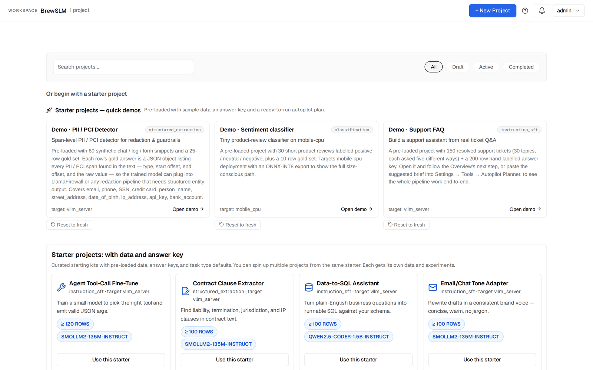

Set up BrewSLM and create your first project
By the end of this tutorial you'll have BrewSLM running locally at http://localhost:5173 with a Celery worker ready to run training, an admin user you can log in as, an empty project you created from the projects home, and a mental map of the six destinations in the project sidebar (Overview, Data, Train, Results, Ship, Settings) plus the notification bell. Every other tutorial in this track assumes you've done this one — start here.
This is the unglamorous tutorial that every other tutorial leans on. We're going to clone the repo, get the backend running on port 8000, start Redis and the Celery worker that runs training, get the frontend running on port 5173, log in, click through the workspace so you know where things are, and send one smoke-test training run through the stack. No machine learning to learn yet — just enough to land you in front of a working empty project, ready to import data in Tutorial 1.
Key idea
BrewSLM runs as three processes plus Redis: a FastAPI backend on port 8000, a Vite frontend on port 5173, and a Celery worker that picks training runs up from Redis. The frontend is what you'll click; the backend does the data, evaluation and generation work; the worker launches training. The frontend and backend talk over HTTP, the backend and worker through Redis. In dev mode all of them run on your laptop.
What you need installed first
Confirm these are on your machine before you start. From a terminal:
python3 --version # need 3.11 or later
node --version # need 20.19+ or 22.12+ (Vite 7)
redis-server --version # any recent version
git --version # any modern version
If python3 reports 3.10 or earlier: install Python 3.11 from python.org or via your package manager (brew install python@3.12 on macOS, apt install python3.12 on Debian/Ubuntu). If Node is too old: nodejs.org or nvm install 22 (Vite 7 needs Node 20.19+ or 22.12+). If Redis is missing: brew install redis on macOS, apt install redis-server on Debian/Ubuntu, or run it in Docker (Step 3).
Required for training:
- Redis. The shipped
.envsetsTRAINING_BACKEND="external", which hands every training run to a Celery worker through Redis. Without Redis, a run you start fails at once (the hand-off to the worker raises, and the run is marked Failed). With Redis up but no worker, the run reads RUNNING but never makes progress, and the training checks don't warn you. Step 3 starts both.
Optional:
- A GPU with CUDA. The SmolLM2-135M default model trains on CPU, just more slowly; a GPU cuts the wait to minutes. The Train confirm dialog shows an estimate for your hardware before you launch.
- A model for synthetic data. The tutorials' Generate steps need a data-writer model. The free local route is a model server such as Ollama with any instruction-tuned chat model pulled. The alternatives are a cloud provider API key or any OpenAI-compatible endpoint, picked under Data → Generate → Provider.
Step 1 — Clone the repository
In a terminal:
git clone https://github.com/TensorGreed/__SLM__.git
cd __SLM__You should see a project structure like this:
__SLM__/
├── backend/ # FastAPI + SQLAlchemy + alembic — the work happens here
├── frontend/ # React + TypeScript + Vite — the UI
├── data/ # gitignored; created on first backend run
├── README.md
└── package.json # repo-root tooling✓ Checkpoint: running ls backend frontend shows both directories. If git clone failed: confirm you have GitHub access and the URL is reachable — public clones don't need auth.
Step 2 — Start the backend (port 8000)
This is the longer of the two installs because Python ML libraries are heavy. Plan for ~3-5 minutes for the first install.
cd backend
python3 -m venv .venv
source .venv/bin/activate # on Windows: .venv\Scripts\activate
pip install -r requirements.txt
cp .env.example .env
uvicorn app.main:app --reload --port 8000When the backend starts you'll see log lines ending with:
INFO: Uvicorn running on http://127.0.0.1:8000 (Press CTRL+C to quit)
INFO: Started reloader process [12345]
INFO: Started server process [12346]
INFO: Application startup complete.One time, on a fresh clone: the first start creates data/ and every database table (the shipped .env has ALLOW_SQLITE_AUTOCREATE=true), but it doesn't record a migration version. Once you see Application startup complete, press Ctrl+C, run alembic stamp head in the same backend directory, then start uvicorn again. That way a later alembic upgrade head (after you pull new code) applies only the new migrations. Don't run alembic upgrade head on the empty database instead: some older migrations use SQL that SQLite rejects.
Leave that terminal running. The --reload flag means the backend will hot-reload when you edit Python files — handy if you peek at the code while doing the tutorials.
✓ Checkpoint: open http://localhost:8000/docs in your browser. You should see the FastAPI auto-generated API docs page (Swagger UI) with a long list of endpoints. If the page doesn't load: check the uvicorn terminal for errors; the most common issue is a missing dependency that pip install skipped silently — re-run pip install -r requirements.txt.
GPU users
For real training on a GPU, install the GPU-flavoured requirements instead: pip install -r requirements-gpu.txt, then install a CUDA-enabled torch wheel that matches your CUDA version (see the README for vendor-specific instructions). For the tutorials' default model (SmolLM2-135M) CPU is fine.
Step 3 — Start Redis and the Celery worker
Training runs don't execute inside the backend. The backend hands each run to a Celery worker through Redis, and the worker launches the training script. Skip this step and every Train click in the later tutorials goes nowhere: with no Redis the run is marked Failed straight away; with Redis but no worker the run reads RUNNING while its task waits in Redis, and it never makes progress. Synthetic generation and evaluation Jobs run inside the backend and don't need the worker, so the rest of the UI works either way, which makes the missing worker easy to miss.
First start Redis on its default port 6379 (the .env points REDIS_URL and CELERY_BROKER_URL at redis://localhost:6379/0). Pick one:
redis-server # in its own terminal
# or: brew services start redis (macOS)
# or: sudo systemctl start redis-server (Debian/Ubuntu)
# or: docker run -d --name redis -p 6379:6379 redis:7-alpine
redis-cli ping # should print PONGThen open a second terminal for the worker and leave the backend running in the first one:
cd __SLM__/backend
source .venv/bin/activate # on Windows: .venv\Scripts\activate
celery -A app.worker.celery_app worker --loglevel=INFO --pool=threads --concurrency=2✓ Checkpoint: the worker log ends with a ready. line and lists its tasks, including run_training_job. If it says it can't connect to redis://localhost:6379/0, Redis isn't running. The same worker also runs compression and quantization (Ship → Package → Options → Compress first) and remote dataset imports.
Step 4 — Start the frontend (port 5173)
Open a third terminal — leave the backend and the worker running.
cd __SLM__/frontend
npm install
npm run devnpm install takes 1-3 minutes the first time. When the dev server starts, you'll see:
VITE v7.x.x ready in 432 ms
➜ Local: http://localhost:5173/
➜ Network: use --host to expose✓ Checkpoint: open http://localhost:5173 in your browser. The page should redirect you to /login automatically. You should see the BrewSLM logo and a Username / Password form with a Sign in button. (A Sign in with SSO button replaces the form only when OIDC is configured; a default dev install doesn't have it.) If the page is blank: check the frontend terminal — usually a missing env var or a port conflict (5173 already in use). The frontend hot-reloads on file edits the same way the backend does.
Step 5 — Log in as the bootstrap admin user
BrewSLM ships with a "local login" path that auto-provisions new users on first sign-in. The shipped .env.example turns local auth on (AUTH_ENABLED=true, which is also the code default), and local login then accepts any username with the API_KEY value as the password. Use the username admin: it's the bootstrap user, created at startup from AUTH_BOOTSTRAP_USERNAME / AUTH_BOOTSTRAP_API_KEY, with full project access. Any other username is created on first sign-in as an ENGINEER. (If you set AUTH_ENABLED=false, the login form refuses with "Authentication is disabled".)
On the login page:
- In Username, type
admin. - In Password, type the value of
API_KEYfrom yourbackend/.envfile. The default value from.env.exampleissk-mock-admin-key. - Click Sign in.
✓ Checkpoint: after sign-in you should land on the projects home. The header shows admin in the top right next to the help (?) icon and the notification bell, with a + New Project button on the left of them. Below the search box and the All / Draft / Active / Completed filter sits "Or begin with a starter project" — three quick demos (Demo · PII / PCI Detector, Demo · Sentiment classifier, Demo · Support FAQ) and a row of starter templates. If your project list is empty and the demos you opened as admin are missing, you logged in as a non-admin user: new usernames become ENGINEER users, who see only the projects they create or are given access to. Sign out, sign back in with the exact username admin.
Production auth is different
In a real deployment you'd keep AUTH_ENABLED=true, configure OIDC, change JWT_SECRET, and admins would manage user → project memberships explicitly. The shared-password local login is a dev-only convenience. Don't ship a real deployment with sk-mock-admin-key as the API key.
Step 6 — Create your first project
On the projects home:

- Click the + New Project button (top right, next to the bell).
- The New BrewSLM Project dialog opens. Fill in:
- Project Name: anything memorable — for example
tutorial-0-test. - What problem do you want this model to solve?: one or two plain sentences, e.g. "Answer customer support FAQs from our resolved tickets. Never hallucinate beyond the dataset." BrewSLM reads this brief and sets the defaults — base model, task profile, output schema. There is no recipe dropdown any more; the task shape comes from the brief and the data, and you can change it later (Train → Task → Change, or Data → Labels → "What kind of task is this?" → Change).
- Advanced options: leave collapsed. It holds a description override, sample inputs / outputs, a base model and deployment target, the link to import a
brewslm.yamlmanifest instead, and three domain selects: Domain preset (default "No domain preset"), Domain pack and Domain profile (both default "Auto-assign default"). Leave them on their defaults; packs are managed later under Settings → Tools → Domain Packs (Tutorials 8 and 9 cover them).
- Project Name: anything memorable — for example
- Click Create project.
The alternative, if you'd rather start with data already in place: under "Or begin with a starter project" click Open demo on Demo · Support FAQ. That is the project Tutorial 1 works in.
✓ Checkpoint: you should now be on the project's Overview. The URL looks like /project/1 (the project id is 1 since this is your first). The left sidebar lists six destinations: Overview, Data, Train, Results, Ship, Settings, with Quick search ⌘K at the bottom. The top bar shows the project name and a Health chip. The Overview's "Where you are" card says Data Ingestion and "Next step" offers Import source data — expected, there's no data yet.

Step 7 — Tour the main surfaces
Take five minutes to click through the six destinations so the rest of the tutorials don't feel like a treasure hunt. Every project has the same sidebar, and nothing is hidden behind a mode switch. The tutorials write click paths as Destination → Step/Tab → control, e.g. Data → Generate → Generation Mode.
- Top bar
- Persistent across every page. From left: the BrewSLM logo (back to the projects home), the project name and its description, a Health chip, the help (?) icon, the notification bell and the user menu. The bell tracks every background job — synthetic generation, training runs, evaluations, exports, RAG comparisons. Click it to see in-flight and recently completed jobs; each one deep-links to where its result landed.
- Left sidebar — six destinations
- Overview · Data · Train · Results · Ship · Settings, in pipeline order, plus Quick search (⌘K / Ctrl+K — a command palette that jumps to any step, section or tab by name) and Collapse. The active destination is highlighted.
- Overview (
/project/<id>) - "Where you are" (the current stage) and "Next step" with one button; a Latest run card (lift against the base model, "Open results"); a Shipped model card (export, Hub link, "Open Ship"); Worth a look — up to three Coach notices with a one-click action and a "why?" trace; and a collapsed Full plan (checklist + quickstart). When in doubt, come back here and press the Next step button.
- Data (
/project/<id>/data?step=…) - Five numbered steps across the top: 1 Sources (upload files, Import dataset (auto-mapping), Write sample documents), 2 Prepare (cleaning: chunk size, Redact PII & Secrets, Clean All Documents), 3 Labels (confirm "What kind of task is this?", the answer key — the gold evaluation dataset — with its diagnostics), 4 Generate (synthetic data: generation mode, provider, model, playbooks), 5 Split (train / validation / test). Each step is a short form on top plus a collapsed Details drawer holding the advanced panels — review queue, playbook center, quality and safety, schema mapping, dataset versions. The tutorials name those sections as Data → Step → Details → Section. A one-line tip and a "Watch the walkthrough" link sit under the step bar.
- Train (
/project/<id>/train) - One form: Base model (+ Browse), Task (read-only + Change), Seeds (One run / Three seeds), Run name, a readiness line, and the Train button — which opens a confirm dialog with the resolved config and an estimate before Launch. Everything else waits under More options: Model and hyperparameters, LoRA and advanced training, Seeds, Checks (preflight), Cloud burst, Training presets, Plan and gaps (config gaps + trainability forecast), Base model registry, Task type, Pipeline presets, Adapter Studio, Tokenization. The runs list with each run's live dashboard sits below the form.
- Results (
/project/<id>/results?tab=…) - Four tabs. Verdict ("Did it work?") — the summary card (better than the base model / within noise…), run picker, the pass/fail result (PASS/FAIL and any failed required rules), the scorecard. Failures ("Where does it fail?") — failure clusters, eval gaps, built-in checks, custom checks, the Pass/fail rules card (rule set picker and each rule's result) with the rule-set editor, the reroute recommendation, the answer-key review. Compare — other runs and models, external benchmarks, the Auto-RAG comparison. Try it — the chat playground: pick a training run, set temperature and max tokens, chat. The most reliable smoke test for "did the model actually learn what I trained it on?"
- Ship (
/project/<id>/ship?stage=…) - Four stages: Package (the New export form — run, format, quantization, deployment targets — and the Releases table), Publish (a completed Hugging Face export to the Hub), Deploy (serve / deploy plans, served versions), Monitor (run events, failure clusters, drift).
- Settings (
/project/<id>/settings) - Appearance (Light / Dark / Match system), Workspace (Show inline tips — the Coach notices; Start advanced sections collapsed), export the project manifest, and a collapsed Tools section for the long tail: Autopilot Planner, Workflow Builder, Domain Packs, Domain Profiles, Extension Studio, Autopilot decisions.

You don't have to memorise this — the tutorials reference these destinations and steps by exact name, and the Overview's Next step button always points at the one that matters now.
Step 8 — Smoke-test training on a starter demo
Everything so far works without the training path: an install with no Redis or no worker still shows every page. This step sends one real run through it, so a missing piece shows up now and not halfway through Tutorial 1. It takes about five minutes plus the first download of the base model.
- Open the demo. Back on the projects home (click the BrewSLM logo), under "Or begin with a starter project", click Open demo on Demo · Support FAQ. It arrives with 150 question → answer rows already split into train, validation and test, so there is nothing to prepare.
- Go to Train. The Base model field already reads
HuggingFaceTB/SmolLM2-135M-Instruct. Leave every other field alone. - Click Train, read the confirm dialog (resolved config and estimate) and click Launch.
- Watch three places.
- The bell gets an entry
Train · exp #<n> · HuggingFaceTB/SmolLM2-135M-Instructwhose line readsinitializing · 5s elapsed. That proves the backend accepted the run and handed it to Redis. It does not prove a worker took it: the line counts up the same way while the run waits in Redis. - The worker terminal (Step 3) logs that it received a
run_training_jobtask, thenStarting training job for experiment <n>. This is the proof that the worker has the run. - The run's dashboard below the Train form shows the status badge RUNNING and, once the worker has started, the training script's log lines streaming in. When the first checkpoint is saved the bell line changes to
step N/M · loss=… · …s elapsed.
- The bell gets an entry
- Stop or keep it. Click Cancel on the run if you only wanted the check, or let it finish: when it completes, BrewSLM queues a second Job in the bell that scores the base model and the trained one on the held-out split (Tutorial 1 explains that comparison).
✓ Checkpoint: the worker terminal shows Starting training job for experiment <n>, the run's log is streaming, and the bell entry for the run is in progress. Two failures are common, and each points at one box in the diagram above:
- The run is marked Failed at once, with a dispatch error: Redis isn't running. Start it (Step 3) and click Train again.
- The run says RUNNING but the worker terminal stays silent and the bell line never gets past
initializing: no worker is connected. Start the worker (Step 3); a waiting run is picked up once it connects.
Optional — Browse the API docs
With the backend running, http://localhost:8000/docs serves Swagger UI for every endpoint. Useful when you want to know what's available behind a panel ("what does that 'Run prepare now' button POST to?") or you're scripting BrewSLM from a notebook. The right side of the page shows endpoint groups: Projects, Datasets, Training, Evaluation, Synthetic, Coach, Jobs, etc. Each endpoint has a "Try it out" button — handy for sanity checks.
Common first-time issues
- Port 8000 or 5173 already in use
- Another process is hogging the port. Find it with
lsof -i :8000(macOS/Linux) ornetstat -ano | findstr :8000(Windows) and kill it, or start the backend on a different port (uvicorn ... --port 8001). If you change the backend port, point the frontend's dev proxy at it when you start Vite:VITE_API_PROXY_TARGET=http://localhost:8001 npm run dev(no need to editvite.config.ts). - pip install fails on the heavy dependencies (torch, transformers)
- The most common cause is an older Python (3.10 or earlier) where some wheels aren't available. Confirm
python3 --versionshows 3.11+, and upgrade pip inside the venv (pip install -U pip) before retrying. - npm install or npm run dev fails
- First check
node --version: Vite 7 needs Node 20.19+ or 22.12+, and older versions fail with an engine or syntax error. Peer-dependency warnings are usually safe to ignore. If npm errors hard on peer dependencies, trynpm install --legacy-peer-deps. - Login succeeds but the project list is empty
- You logged in with a non-admin username. New usernames are created as ENGINEER users: they can create their own projects but don't see projects owned by
admin, including the starter demos. Sign out (top-right user menu) and sign back in withadminas the username — that user has full bootstrap access. - A training run says RUNNING but never makes progress
- No Celery worker is picking it up: the worker isn't running (Step 3). The run's badge reads RUNNING as soon as the backend hands it to Redis, so the tell is a silent worker terminal and a bell line stuck on
initializing. Start the worker; a waiting run is picked up once it connects. (If Redis itself is down, the hand-off fails and the run is marked Failed with a dispatch error. Start Redis and click Train again.) Compression and remote imports go through the same worker. A synthetic-generation or evaluation Job stuck in "queued" is a different problem: those run inside the backend, so it usually means the backend restarted mid-run. Start the action again. - The frontend can't talk to the backend (network errors in the browser console)
- Confirm both processes are running. Open
http://localhost:8000/docsdirectly to verify the backend; openhttp://localhost:5173to verify the frontend. If both load but the frontend's/api/...calls fail, the dev proxy isn't reaching the backend: if the backend isn't on port 8000, restart Vite withVITE_API_PROXY_TARGETset to its URL.
What's next
You have BrewSLM running, an admin user, an empty project, and proof that a training run reaches the worker. The other tutorials assume exactly this state. Pick one:
- Tutorial 1 — Support FAQ assistant with rag-protocol
- The canonical workflow. Build a small model that grounds answers in your FAQ corpus, cites the source chunk, and refuses cleanly off-topic. Best first tutorial if you want to ship a customer-facing retrieval-grounded assistant.
- Tutorial 2 — SQL injection classifier (security)
- A binary classifier for inline security checks. Best first tutorial if you want to learn the classification recipe + the hard-negatives playbook, especially if your team is security-focused.
If your project has a different shape, pick by task:
- Pull fields or spans out of text: Tutorial 3 — invoice field extraction or Tutorial 7 — PII span tagging.
- Route text into one of several classes: Tutorial 4 — customer ticket triage.
- Answer questions about a small, stable knowledge base without retrieval: Tutorial 5 — internal KB Q&A.
- Review code diffs: Tutorial 6 — code review nitpicker.
- Tune scoring and data rules for one domain: Tutorial 8 — legal contracts domain pack and Tutorial 9 — building a domain pack.
The tutorials hub lists all of them.
Key terms (just the bare minimum for now)
- Backend
- The FastAPI Python process at
http://localhost:8000. Handles data, evaluation and generation work and queues training runs. Survives frontend restarts. - Celery worker
- The process that picks training runs (and compression, quantization and remote imports) up from Redis and runs them. Required for training with the default
TRAINING_BACKEND="external". - Frontend
- The Vite/React UI at
http://localhost:5173. The thing you click. Talks to the backend over HTTP. - Project
- One BrewSLM training effort. Has one task shape, one answer key, one dataset family, one trained model (or many runs comparing variants). Multiple projects per BrewSLM install are normal.
- Recipe
- The training plan template — base model + adapter, plus a suggested pass/fail rule set that applies only after you click Use scaffold or pick a rule set in the Project rule set picker (Results → Failures). BrewSLM picks one from your brief and your data; change it under Train → Task → Change. There are eleven; the main ones (rag-protocol, classification, qa-sft, span-extraction, summarization, code-review, generic-sft) are covered across the other tutorials, and json-extraction, code-findings, code-remediation and structured-plan round out the list.
- Data
- The destination for getting data into shape, in five steps: Sources, Prepare, Labels (the answer key), Generate (synthetic data), Split. Where you spend most of your time before training.
- Answer key
- BrewSLM's name for the gold set — the trusted rows every run is scored against. Lives under Data → Labels.
- Notification bell
- Top-right icon. Tracks every background job. Tells you when a 30-second synth generation is done or a 30-minute training run is converging.
- Admin user
- The bootstrap account with full project access. Always log in as
adminfor the tutorials — other usernames auto-provision as ENGINEER users who don't see admin's projects.
Check yourself
Answers are saved to this browser.